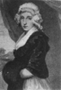
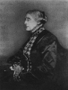
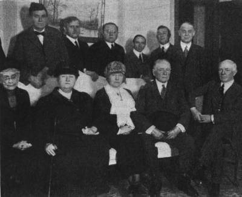

Women in Public Affairs. —The social legislation enacted in response to the spirit of reform vitally affected women in the home and in industry and was promoted by their organizations. Where they did not lead, they were affiliated with movements for social improvement. No cause escaped their attention; no year passed without widening the range of their interests. They served on committees that inquired into the problems of the day; they appeared before legislative assemblies to advocate remedies for the evils they discovered. By 1912 they were a force to be reckoned with in national politics. In nine states complete and equal suffrage had been established, and a widespread campaign for a national suffrage amendment was in full swing. On every hand lay evidences that their sphere had been broadened to include public affairs.
This was the culmination of forces that had long been operating.
A New Emphasis in History. —A movement so deeply affecting important interests could not fail to find a place in time in the written record of human progress. History often began as a chronicle of kings and queens, knights and ladies, written partly to amuse and partly to instruct the classes that appeared in its pages. With the growth of commerce, parliaments, and international relations, politics and diplomacy were added to such chronicles of royal and princely doings. After the rise of democracy, industry, and organized labor, the transactions of everyday life were deemed worthy of a place in the pages of history. In each case history was rewritten and the past rediscovered in the light of the new age. So it will be with the rise and growth of women's political power. The history of their labor, their education, their status in society, their influence on the course of events will be explored and given its place in the general record.
It will be a history of change. The superior position which women enjoy in America to-day is the result of a slow evolution from an almost rightless condition in colonial times. The founders of America brought with them the English common law. Under that law, a married woman's personal property—jewels, money, furniture, and the like—became her husband's property; the management of her lands passed into his control. Even the wages she earned, if she worked for some one else, belonged to him. Custom, if not law, prescribed that women should not take part in town meetings or enter into public discussions of religious questions. Indeed it is a far cry from the banishment of Anne Hutchinson from Massachusetts in 1637, for daring to dispute with the church fathers, to the political conventions of 1920 in which women sat as delegates, made nominating speeches, and served on committees. In the contrast between these two

scenes may be measured the change in the privileges of women since the landing of the Pilgrims. The account of this progress is a narrative of individual effort on the part of women, of organizations among them, of generous aid from sympathetic men in the long agitation for the removal of civil and political disabilities. It is in part also a narrative of irresistible economic change which drew women into industry, created a leisure class, gave women wages and incomes, and therewith economic independence.
The Rise of the Woman Movement
Abigail Adams
Protests of Colonial Women. —The republican spirit which produced American independence was of slow and steady growth. It did not spring up full-armed in a single night. It was, on the contrary, nourished during a long period of time by fireside discussions as well as by debates in the public forum. Women shared that fireside sifting of political principles and passed on the findings of that scrutiny in letters to their friends, newspaper articles, and every form of written word. How widespread was this potent, though not spectacular force, is revealed in the collections of women's letters, articles, songs, dramas, and satirical
"skits" on English rule that have come down to us. In this search into the reasons of government, some women began to take thought about laws that excluded them from the ballot. Two women at least left their protests on record. Abigail, the ingenious and witty wife of John Adams, wrote to her husband, in March, 1776, that women objected "to all arbitrary power whether of state or males" and demanded political privileges in the new order then being created. Hannah Lee Corbin, the sister of "Lighthorse" Harry Lee, protested to her brother against the taxation of women without representation.
The Stir among European Women. —Ferment in America, in the case of women as of men, was quickened by events in Europe. In 1792, Mary Wollstonecraft published in England the Vindication of the Rights of Women—a book that was destined to serve the cause of liberty among women as the writings of Locke and Paine had served that of men. The specific grievances which stirred English women were men's invasion of women's industries, such as spinning and weaving; the denial of equal educational opportunities; and political disabilities. In France also the great Revolution raised questionings about the status of women. The rights of "citizenesses" as well as the rights of "citizens" were examined by the boldest thinkers. This in turn reacted upon women in the United States.
Leadership in America. —The origins of the American woman movement are to be found in the writings of a few early intellectual leaders. During the first decades of the nineteenth century, books, articles, and pamphlets about women came in increasing numbers from the press. Lydia Maria Child wrote a history of women; Margaret Fuller made a critical examination of the status of women in her time; and Mrs.
Elizabeth Ellet supplemented the older histories by showing what an important part women had played in the American Revolution.
The Struggle for Education. —Along with criticism, there was carried on a constructive struggle for better educational facilities for women who had been from the beginning excluded from every college in the country. In this long battle, Emma Willard and Mary Lyon led the way; the former founded a seminary
at Troy, New York; and the latter made the beginnings of Mount Holyoke College in Massachusetts.
Oberlin College in Ohio, established in 1833, opened its doors to girls and from it were graduated young students to lead in the woman movement. Sarah J. Hale, who in 1827 became the editor of a "Ladies'
Magazine," published in Boston, conducted a campaign for equal educational opportunities which helped to bear fruit in the founding of Vassar College shortly after the Civil War.
The Desire to Effect Reforms. —As they came to study their own history and their own part in civilization, women naturally became deeply interested in all the controversies going on around them. The temperance question made a special appeal to them and they organized to demand the right to be heard on it. In 1846 the "Daughters of Temperance" formed a secret society favoring prohibition. They dared to criticize the churches for their indifference and were so bold as to ask that drunkenness be made a ground for divorce.
The slavery issue even more than temperance called women into public life. The Grimké sisters of South Carolina emancipated their bondmen, and one of these sisters, exiled from Charleston for her "Appeal to the Christian Women of the South," went North to work against the slavery system. In 1837 the National Women's Anti-Slavery Convention met in New York; seventy-one women delegates represented eight states. Three years later eight American women, five of them in Quaker costume, attended the World Anti-Slavery Convention in London, much to the horror of the men, who promptly excluded them from the sessions on the ground that it was not fitting for women to take part in such meetings.
In other spheres of activity, especially social service, women steadily enlarged their interest. Nothing human did they consider alien to them. They inveighed against cruel criminal laws and unsanitary prisons.
They organized poor relief and led in private philanthropy. Dorothea Dix directed the movement that induced the New York legislature to establish in 1845 a separate asylum for the criminal insane. In the same year Sarah G. Bagley organized the Lowell Female Reform Association for the purpose of reducing the long hours of labor for women, safeguarding "the constitutions of future generations." Mrs. Eliza Woodson Farnham, matron in Sing Sing penitentiary, was known throughout the nation for her social work, especially prison reform. Wherever there were misery and suffering, women were preparing programs of relief.
Freedom of Speech for Women. —In the advancement of their causes, of whatever kind, women of necessity had to make public appeals and take part in open meetings. Here they encountered difficulties.
The appearance of women on the platform was new and strange. Naturally it was widely resented.
Antoinette Brown, although she had credentials as a delegate, was driven off the platform of a temperance convention in New York City simply because she was a woman. James Russell Lowell, editor of the
"Atlantic Monthly," declined a poem from Julia Ward Howe on the theory that no woman could write a poem; but he added on second thought that he might consider an article in prose. Nathaniel Hawthorne, another editor, even objected to something in prose because to him "all ink-stained women were equally detestable." To the natural resentment against their intrusion into new fields was added that aroused by their ideas and methods. As temperance reformers, they criticized in a caustic manner those who would not accept their opinions. As opponents of slavery they were especially bitter. One of their conventions, held at Philadelphia in 1833, passed a resolution calling on all women to leave those churches that would not condemn every form of human bondage. This stirred against them many of the clergy who, accustomed to having women sit silent during services, were in no mood to treat such a revolt leniently.
Then came the last straw. Women decided that they would preach—out of the pulpit first, and finally in it.
Women in Industry. —The period of this ferment was also the age of the industrial revolution in America, the rise of the factory system, and the growth of mill towns. The labor of women was transferred from the homes to the factories. Then arose many questions: the hours of labor, the sanitary conditions of the mills, the pressure of foreign immigration on native labor, the wages of women as compared with those of men, and the right of married women to their own earnings. Labor organizations sprang up among working
women. The mill girls of Lowell, Massachusetts, mainly the daughters of New England farmers, published a magazine, "The Lowell Offering." So excellent were their writings that the French statesman, Thiers, carried a copy of their paper into the Chamber of Deputies to show what working women could achieve in a republic. As women were now admittedly earning their own way in the world by their own labor, they began to talk of their "economic independence."
The World Shaken by Revolution. —Such was the quickening of women's minds in 1848 when the world was startled once more by a revolution in France which spread to Germany, Poland, Austria, Hungary, and Italy. Once more the people of the earth began to explore the principles of democracy and expound human rights. Women, now better educated and more "advanced" in their ideas, played a rôle of still greater importance in that revolution. They led in agitations and uprisings. They suffered from reaction and persecution. From their prison in France, two of them who had been jailed for too much insistence on women's rights exchanged greetings with American women who were raising the same issue here. By this time the women had more supporters among the men. Horace Greeley, editor of the New York Tribune, though he afterwards recanted, used his powerful pen in their behalf. Anti-slavery leaders welcomed their aid and repaid them by urging the enfranchisement of women.
The Woman's Rights Convention of 1848. —The forces, moral and intellectual, which had been stirring among women, crystallized a few months after the outbreak of the European revolution in the first Woman's Rights Convention in the history of America. It met at Seneca Falls, New York, in 1848, on the call of Lucretia Mott, Martha Wright, Elizabeth Cady Stanton, and Mary Ann McClintock, three of them Quakers. Accustomed to take part in church meetings with men, the Quakers naturally suggested that men as well as women be invited to attend the convention. Indeed, a man presided over the conference, for that position seemed too presumptuous even for such stout advocates of woman's rights.
The deliberations of the Seneca Falls convention resulted in a Declaration of Rights modeled after the Declaration of Independence. For example, the preamble began: "When in the course of human events it becomes necessary for one portion of the family of man to assume among the people of the earth a position different from that which they have hitherto occupied...." So also it closed: "Such has been the patient suffering of women under this government and such is now the necessity which constrains them to demand the equal station to which they are entitled." Then followed the list of grievances, the same number which had been exhibited to George III in 1776. Especially did they assail the disabilities imposed upon them by the English common law imported into America—the law which denied married women their property, their wages, and their legal existence as separate persons. All these grievances they recited to "a candid world." The remedies for the evils which they endured were then set forth in detail. They demanded "equal rights" in the colleges, trades, and professions; equal suffrage; the right to share in all political offices, honors, and emoluments; the right to complete equality in marriage, including equal guardianship of the children; and for married women the right to own property, to keep wages, to make contracts, to transact business, and to testify in the courts of justice. In short, they declared women to be persons as men are persons and entitled to all the rights and privileges of human beings. Such was the clarion call which went forth to the world in 1848—to an amused and contemptuous world, it must be admitted—but to a world fated to heed and obey.
The First Gains in Civil Liberty. —The convention of 1848 did not make political enfranchisement the leading issue. Rather did it emphasize the civil disabilities of women which were most seriously under discussion at the time. Indeed, the New York legislature of that very year, as the result of a twelve years'
agitation, passed the Married Woman's Property Act setting aside the general principles of the English common law as applied to women and giving them many of the "rights of man." California and Wisconsin followed in 1850; Massachusetts in 1854; and Kansas in 1859. Other states soon fell into line. Women's earnings and inheritances were at last their own in some states at least. In a little while laws were passed granting women rights as equal guardians of their children and permitting them to divorce their husbands on the grounds of cruelty and drunkenness.
By degrees other steps were taken. The Woman's Medical College of Pennsylvania was founded in 1850, and the Philadelphia School of Design for Women three years later. In 1852 the American Women's Educational Association was formed to initiate an agitation for enlarged educational opportunities for women. Other colleges soon emulated the example of Oberlin: the University of Utah in 1850; Hillsdale College in Michigan in 1855; Baker University in Kansas in 1858; and the University of Iowa in 1860.
New trades and professions were opened to women and old prejudices against their activities and demands slowly gave way.
The National Struggle for Woman Suffrage
The Beginnings of Organization. —As women surmounted one obstacle after another, the agitation for equal suffrage came to the front. If any year is to be fixed as the date of its beginning, it may very well be 1850, when the suffragists of Ohio urged the state constitutional convention to confer the vote upon them.
With apparent spontaneity there were held in the same year state suffrage conferences in Indiana, Pennsylvania, and Massachusetts; and connections were formed among the leaders of these meetings. At the same time the first national suffrage convention was held in Worcester, Massachusetts, on the call of eighty-nine leading men and women representing six states. Accounts of the convention were widely circulated in this country and abroad. English women,—for instance, Harriet Martineau,—sent words of appreciation for the work thus inaugurated. It inspired a leading article in the "Westminster Review,"
which deeply interested the distinguished economist, John Stuart Mill. Soon he was the champion of woman suffrage in the British Parliament and the author of a powerful tract The Subjection of Women, widely read throughout the English-speaking world. Thus do world movements grow. Strange to relate the women of England were enfranchised before the adoption of the federal suffrage amendment in America.
The national suffrage convention of 1850 was followed by an extraordinary outburst of agitation.
Pamphlets streamed from the press. Petitions to legislative bodies were drafted, signed, and presented.
There were addresses by favorite orators like Garrison, Phillips, and Curtis, and lectures and poems by men like Emerson, Longfellow, and Whittier. In 1853 the first suffrage paper was founded by the wife of a member of Congress from Rhode Island. By this time the last barrier to white manhood suffrage in the North had been swept away and the woman's movement was gaining momentum every year.
The Suffrage Movement Checked by the Civil War. —Advocates of woman suffrage believed themselves on the high road to success when the Civil War engaged the energies and labors of the nation.
Northern women became absorbed in the struggle to preserve the union. They held no suffrage conventions for five years. They transformed their associations into Loyalty Leagues. They banded together to buy only domestic goods when foreign imports threatened to ruin American markets. They rolled up monster petitions in favor of the emancipation of slaves. In hospitals, in military prisons, in agriculture, and in industry they bore their full share of responsibility. Even when the New York legislature took advantage of their unguarded moments and repealed the law giving the mother equal rights with the father in the guardianship of children, they refused to lay aside war work for agitation. As in all other wars, their devotion was unstinted and their sacrifices equal to the necessities of the hour.
The Federal Suffrage Amendment. —Their plans and activities, when the war closed, were shaped by events beyond their control. The emancipation of the slaves and their proposed enfranchisement made prominent the question of a national suffrage for the first time in our history. Friends of the colored man insisted that his civil liberties would not be safe unless he was granted the right to vote. The woman suffragists very pertinently asked why the same principle did not apply to women. The answer which they received was negative. The fourteenth amendment to the federal Constitution, adopted in 1868, definitely put women aside by limiting the scope of its application, so far as the suffrage was concerned, to the male sex. In making manhood suffrage national, however, it nationalized the issue.

Copyright by Underwood and Underwood, N.Y.
Susan B. Anthony
This was the signal for the advocates of woman suffrage. In March, 1869, their proposed amendment was introduced in Congress by George W. Julian of Indiana. It provided that no citizen should be deprived of the vote on account of sex, following the language of the fifteenth amendment which forbade disfranchisement on account of race. Support for the amendment, coming from many directions, led the suffragists to believe that their case was hopeful. In their platform of 1872, for example, the Republicans praised the women for their loyal devotion to freedom, welcomed them to spheres of wider usefulness, and declared that the demand of any class of citizens for additional rights deserved "respectful consideration."
Experience soon demonstrated, however, that praise was not the ballot. Indeed the suffragists already had realized that a tedious contest lay before them. They had revived in 1866 their regular national convention.
They gave the name of "The Revolution" to their paper, edited by Elizabeth Cady Stanton and Susan B.
Anthony. They formed a national suffrage association and organized annual pilgrimages to Congress to present their claims. Such activities bore some results. Many eminent congressmen were converted to their cause and presented it ably to their colleagues of both chambers. Still the subject was ridiculed by the newspapers and looked upon as freakish by the masses.
The State Campaigns. —Discouraged by the outcome of the national campaign, suffragists turned to the voters of the individual states and sought the ballot at their hands. Gains by this process were painfully slow. Wyoming, it is true, while still a territory, granted suffrage to women in 1869 and continued it on becoming a state twenty years later, in spite of strong protests in Congress. In 1893 Colorado established complete political equality. In Utah, the third suffrage state, the cause suffered many vicissitudes. Women were enfranchised by the territorial legislature; they were deprived of the ballot by Congress in 1887; finally in 1896 on the admission of Utah to the union they recovered their former rights. During the same year, 1896, Idaho conferred equal suffrage upon the women. This was the last suffrage victory for more than a decade.
The Suffrage Cause in Congress. —In the midst of the meager gains among the states there were occasional flurries of hope for immediate action on the federal amendment. Between 1878 and 1896 the Senate committee reported the suffrage resolution by a favorable majority on five different occasions.
During the same period, however, there were nine unfavorable reports and only once did the subject reach the point of a general debate. At no time could anything like the required two-thirds vote be obtained.
The Changing Status of Women. —While the suffrage movement was lagging, the activities of women in other directions were steadily multiplying. College after college—Vassar, Bryn Mawr, Smith, Wellesley, to mention a few—was founded to give them the advantages of higher education. Other institutions, especially the state universities of the West, opened their doors to women, and women were received into the professions of law and medicine. By the rapid growth of public high schools in which girls enjoyed the same rights as boys, education was extended still more widely. The number of women teachers increased by leaps and bounds.

Meanwhile women were entering nearly every branch of industry and business. How many of them worked at gainful occupations before 1870 we do not know; but from that year forward we have the records of the census. Between 1870 and 1900 the proportion of women in the professions rose from less than two per cent to more than ten per cent; in trade and transportation from 24.8 per cent to 43.2 per cent; and in manufacturing from 13 to 19 per cent. In 1910, there were over 8,000,000 women gainfully employed as compared with 30,000,000 men. When, during the war on Germany, the government established the principle of equal pay for equal work and gave official recognition to the value of their services in industry, it was discovered how far women had traveled along the road forecast by the leaders of 1848.
The Club Movement among Women. —All over the country women's societies and clubs were started to advance this or that reform or merely to study literature, art, and science. In time these women's organizations of all kinds were federated into city, state, and national associations and drawn into the consideration of public questions. Under the leadership of Frances Willard they made temperance reform a vital issue. They took an interest in legislation pertaining to prisons, pure food, public health, and municipal government, among other things. At their sessions and conferences local, state, and national issues were discussed until finally, it seems, everything led to the quest of the franchise. By solemn resolution in 1914 the National Federation of Women's Clubs, representing nearly two million club women, formally endorsed woman suffrage. In the same year the National Education Association, speaking for the public school teachers of the land, added its seal of approval.
Copyright by Underwood and Underwood, N.Y.
Conference of Men and Women Delegates at a National Convention in 1920
State and National Action. —Again the suffrage movement was in full swing in the states. Washington in 1910, California in 1911, Oregon, Kansas, and Arizona in 1912, Nevada and Montana in 1914 by popular vote enfranchised their women. Illinois in 1913 conferred upon them the right to vote for President of the United States. The time had arrived for a new movement. A number of younger suffragists sought to use the votes of women in the equal suffrage states to compel one or both of the national political parties to endorse and carry through Congress the federal suffrage amendment. Pressure then came upon Congress from every direction: from the suffragists who made a straight appeal on the grounds of justice; and from the suffragists who besought the women of the West to vote against candidates for President, who would
not approve the federal amendment. In 1916, for the first time, a leading presidential candidate, Mr.
Charles E. Hughes, speaking for the Republicans, endorsed the federal amendment and a distinguished ex-President, Roosevelt, exerted a powerful influence to keep it an issue in the campaign.
National Enfranchisement. —After that, events moved rapidly. The great state of New York adopted equal suffrage in 1917. Oklahoma, South Dakota, and Michigan swung into line the following year; several other states, by legislative action, gave women the right to vote for President. In the meantime the suffrage battle at Washington grew intense. Appeals and petitions poured in upon Congress and the President. Militant suffragists held daily demonstrations in Washington. On September 30, 1918, President Wilson, who, two years before, had opposed federal action and endorsed suffrage by state adoption only, went before Congress and urged the passage of the suffrage amendment to the Constitution. In June, 1919, the requisite two-thirds vote was secured; the resolution was carried and transmitted to the states for ratification. On August 28, 1920, the thirty-sixth state, Tennessee, approved the amendment, making three-fourths of the states as required by the Constitution. Thus woman suffrage became the law of the land. A new political democracy had been created. The age of agitation was closed and the epoch of responsible citizenship opened.
General References
Edith Abbott, Women in Industry.
C.P. Gilman, Woman and Economics.
I.H. Harper, Life and Work of Susan B. Anthony.
E.R. Hecker, Short History of Woman's Rights.
S.B. Anthony and I.H. Harper, History of Woman Suffrage (4 vols.).
J.W. Taylor, Before Vassar Opened.
A.H. Shaw, The Story of a Pioneer.
Research Topics
The Rise of the Woman Suffrage Movement. —McMaster, History of the People of the United States, Vol. VIII, pp. 116-121; K. Porter, History of Suffrage in the United States, pp. 135-145.
The Development of the Suffrage Movement. —Porter, pp. 228-254; Ogg, National Progress (American Nation Series), pp. 151-156 and p. 382.
Women's Labor in the Colonial Period. —E. Abbott, Women in Industry, pp. 10-34.
Women and the Factory System. —Abbott, pp. 35-62.
Early Occupations for Women. —Abbott, pp. 63-85.
Women's Wages. —Abbott, pp. 262-316.
Questions
1. Why were women involved in the reform movements of the new century?
2. What is history? What determines the topics that appear in written history?
3. State the position of women under the old common law.
4. What part did women play in the intellectual movement that preceded the American Revolution?
5. Explain the rise of the discussion of women's rights.
6. What were some of the early writings about women?
7. Why was there a struggle for educational opportunities?
8. How did reform movements draw women into public affairs and what were the chief results?
9. Show how the rise of the factory affected the life and labor of women.
10. Why is the year 1848 an important year in the woman movement? Discuss the work of the Seneca Falls convention.
11. Enumerate some of the early gains in civil liberty for women.
12. Trace the rise of the suffrage movement. Show the effect of the Civil War.
13. Review the history of the federal suffrage amendment.
14. Summarize the history of the suffrage in the states.